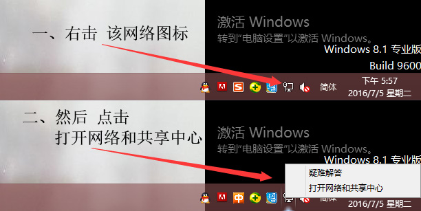
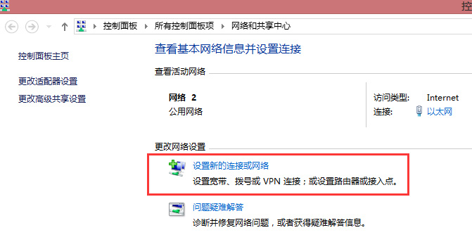

| WinXP教程 | Win7教程 | Win8教程 | Win10教程 | Mac教程 | iPad教程 | iPhone教程 | Android教程 | 小米教程 |
Win8中设置VPN
- 1.点击桌面右下角任务栏中的网络图标，然后点击“打开网络和共享中心”。也可以通过控制面板中的网络和Internet进入网络和共享中心。
- 
- 2. 在网络和共享中心里，点击“设置新的连接或网络”
- 
- 3. 选中“连接到工作区”，点击“下一步”

- 4. 点击“使用我的Internet连接（VPN）”

- 5. 在Internet地址处栏填写VPN服务器地址，服务器地址可于后台查看。“目标名称”可随意填写主要用于标识或区别线路。点击创建

- 6. 此时已成功创建VPN连接，但不建议立即连接，我们还需要设置一下VPN的协议（PPTP），点击网络与共享中心面板左上角的“更改适配器设置”；

- 7. 右击刚创建的VPN连接，选择属性，更改设置

- 8. 在属性对话框中选择安全选项卡，VPN类型选择“点对点隧道协议（PPTP）”，点击确认按钮保存设置

- 9. 右击启动VPN连接，即可看到Win8右侧出现的连接按钮

- 10.输入VPN账号及VPN密码，点击确认进行连接即可